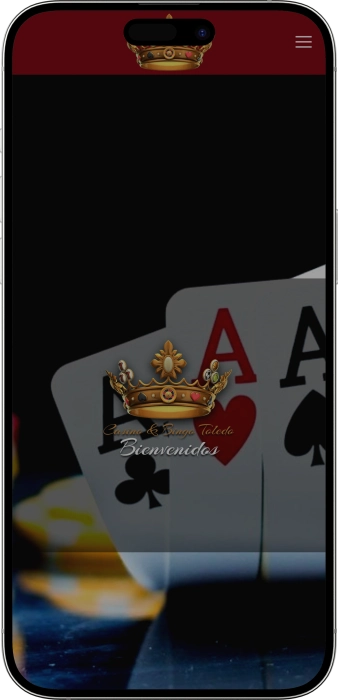

Oferta exclusiva de bienvenida de
Oferta exclusiva de bienvenida de
Descubre la Emoción del Casino Castell de Peralada
Los mejores casinos
Detalles de bonificación
Casino
Bonos
Rate
Giros gratis
Más info
Conseguir
Ventajas
- ¿Buscas un casino de confianza? Casino Castell de Peralada ofrece juego responsable certificado, torneos de póker profesionales y atención al cliente personalizada. Estos son nuestros diferenciales:
-
Más de 30 años de experiencia repartiendo entretenimiento y suerte
-
Torneos de póker semanales con premios garantizados y mesas profesionales
-
Amplia variedad de tragaperras, ruleta americana y juegos de mesa clásicos
-
Sala de bingo moderna con sesiones diarias y botes acumulados
-
Servicio de restaurante y bar disponible hasta altas horas de la madrugada
-
Juego responsable certificado con límites personalizados y autoexclusión
- Únete a miles de jugadores que confían en nosotros para disfrutar de una experiencia segura y emocionante. Nuestro equipo está disponible para ayudarte en cualquier momento.
Casino Castell de Peralada App


Sobre Casino Castell de Peralada
Casino Castell de Peralada es un referente del entretenimiento en Cataluña desde hace décadas. Nuestra dedicación a la excelencia nos ha convertido en el destino preferido para amantes del póker, bingo y juegos de mesa. Ofrecemos instalaciones de primer nivel en un entorno histórico único.
- Ampliación de la sala de juego con más de 150 máquinas tragaperras
- Lanzamiento de torneos de póker con premios garantizados mensuales
- Incorporación de sala de bingo moderna con tecnología digital avanzada (75 símbolos)
- Apertura de restaurante gourmet y bar con coctelería de autor
Operamos bajo estrictas regulaciones de juego con certificaciones de organismos oficiales. Nuestra plataforma cumple con normativas de seguridad y protección de datos. Todos los juegos son auditados regularmente para garantizar resultados aleatorios justos. Seguimos expandiendo nuestra oferta de entretenimiento y servicios premium. Nuestro compromiso con el juego responsable es nuestra prioridad absoluta. Visítanos y descubre por qué somos la elección preferida de jugadores exigentes.
Guía Completa de Juegos de Casino
Guía Completa de Juegos de Casino en Castell de Peralada
El mundo de los casinos ofrece una experiencia única de entretenimiento que combina emoción, estrategia y la posibilidad de obtener premios significativos. En Casino Castell de Peralada, hemos desarrollado una oferta integral que abarca desde los clásicos juegos de mesa hasta las más modernas tragaperras electrónicas. Esta guía te proporcionará toda la información necesaria para disfrutar al máximo de cada tipo de juego disponible en nuestras instalaciones. Conocer las reglas, estrategias básicas y particularidades de cada juego te permitirá tomar decisiones informadas y maximizar tu experiencia de entretenimiento.
Juegos de Mesa Clásicos
Los juegos de mesa representan la esencia tradicional del casino, ofreciendo experiencias que han perdurado durante siglos. Estos juegos combinan elementos de azar con estrategia, permitiendo a los jugadores influir en el resultado mediante decisiones inteligentes. La ruleta, el blackjack y el póker son los pilares fundamentales de cualquier casino respetable, cada uno con sus particularidades y niveles de complejidad. En Casino Castell de Peralada, contamos con mesas profesionales atendidas por crupieres experimentados que garantizan partidas fluidas y emocionantes.
La ruleta es uno de los juegos más icónicos y accesibles para principiantes. Existen dos variantes principales: la europea con un solo cero y la americana con doble cero. La versión europea ofrece mejores probabilidades para el jugador, con una ventaja de la casa de aproximadamente 2.7% frente al 5.26% de la americana. Los jugadores pueden realizar múltiples tipos de apuestas, desde números individuales con pagos de 35:1 hasta apuestas simples como rojo/negro con pagos de 1:1. La estrategia en la ruleta se centra principalmente en la gestión del bankroll y la comprensión de las probabilidades asociadas a cada tipo de apuesta.
- Blackjack: Juego de cartas donde el objetivo es alcanzar 21 puntos o acercarse más que el crupier sin pasarse. Ofrece una de las ventajas de casa más bajas del casino, especialmente si se aplica estrategia básica correctamente. Los jugadores deben decidir entre pedir carta, plantarse, doblar apuesta o dividir pares según las cartas visibles.
- Póker Texas Hold'em: La variante más popular del póker mundial, donde cada jugador recibe dos cartas privadas y se combinan con cinco cartas comunitarias. Requiere habilidad, psicología y matemáticas para evaluar probabilidades de manos ganadoras. Los torneos profesionales ofrecen premios garantizados y estructuras de ciegas progresivas.
- Baccarat: Juego elegante donde se apuesta por la mano del jugador, la banca o empate. Las reglas son simples y no requieren decisiones complejas durante el juego. La apuesta a la banca tiene ventaja de casa de solo 1.06%, convirtiéndola en una de las mejores opciones estadísticas.
- Ruleta Francesa: Variante europea con reglas adicionales como "La Partage" que devuelve la mitad de apuestas simples cuando sale el cero. Reduce la ventaja de la casa al 1.35% en apuestas externas, ofreciendo mejores probabilidades a largo plazo para jugadores estratégicos.
Tragaperras y Máquinas de Azar
Las máquinas tragaperras modernas han evolucionado significativamente desde sus orígenes mecánicos hasta convertirse en sofisticados sistemas digitales con gráficos impresionantes y funciones interactivas. Estas máquinas utilizan generadores de números aleatorios certificados que garantizan resultados completamente impredecibles y justos. En Casino Castell de Peralada disponemos de más de 150 máquinas con temáticas variadas, desde clásicas frutas hasta aventuras cinematográficas con jackpots progresivos. El porcentaje de retorno al jugador (RTP) de nuestras máquinas oscila entre el 92% y el 98%, dependiendo del modelo y configuración específica.
La selección de una tragaperras adecuada depende de varios factores incluidos el presupuesto disponible, la volatilidad deseada y las características especiales que se busquen. Las máquinas de alta volatilidad ofrecen premios mayores pero con menor frecuencia, mientras que las de baja volatilidad proporcionan ganancias más pequeñas pero más regulares. Es fundamental establecer límites de tiempo y dinero antes de comenzar a jugar, así como comprender que las tragaperras son juegos de azar puro sin estrategia que pueda modificar las probabilidades matemáticas inherentes al diseño de la máquina.
- Tragaperras Clásicas: Máquinas de 3 rodillos con símbolos tradicionales de frutas, sietes y barras. Ofrecen mecánicas simples sin funciones bonus complejas, ideales para jugadores que prefieren experiencias directas. Los premios máximos suelen ser modestos pero predecibles en su estructura de pago.
- Video Slots con Bonus: Máquinas de 5 rodillos con múltiples líneas de pago, giros gratis, multiplicadores y rondas bonus interactivas. Presentan temáticas elaboradas con animaciones y efectos sonoros inmersivos. Los jackpots pueden alcanzar miles de euros con apuestas máximas en líneas especiales.
- Jackpots Progresivos: Máquinas conectadas en red donde una porción de cada apuesta contribuye a un premio acumulado que crece continuamente. Los botes pueden alcanzar cifras millonarias antes de ser ganados por un jugador afortunado. Requieren apuestas máximas para optar al jackpot principal en la mayoría de configuraciones.
- Máquinas Multi-Juego: Terminales que permiten seleccionar entre varios juegos diferentes en una misma pantalla, incluyendo video póker, keno y variantes de tragaperras. Ofrecen versatilidad sin necesidad de cambiar de máquina física durante la sesión de juego.
Bingo: Tradición y Emoción Comunitaria
El bingo representa una forma única de entretenimiento que combina el azar con la experiencia social compartida entre múltiples jugadores simultáneos. En Casino Castell de Peralada, nuestra sala de bingo moderna cuenta con tecnología digital avanzada que agiliza las partidas manteniendo la esencia tradicional del juego. Los cartones electrónicos permiten jugar múltiples tarjetas simultáneamente sin perder ninguna jugada, mientras que el sistema automático marca los números cantados. Las sesiones diarias ofrecen diferentes modalidades incluyendo bingo de 75 bolas, 90 bolas y variantes especiales con premios acumulados. El ambiente comunitario y la emoción de estar a punto de completar un cartón ganador hacen del bingo una experiencia social incomparable.
| Modalidad de Bingo | Números Totales | Tipos de Premio | Dificultad |
|---|---|---|---|
| Bingo 75 Bolas | 1-75 | Líneas, patrones, cartón completo | Media |
| Bingo 90 Bolas | 1-90 | Línea simple, dos líneas, cartón completo | Media-Alta |
| Bingo Express | 1-45 | Cartón completo | Baja |
| Bingo Progresivo | Variable | Jackpot acumulado especial | Alta |
La estrategia en el bingo es limitada pero existente. Seleccionar cartones con números distribuidos uniformemente aumenta las probabilidades de marcar números en cada extracción. Jugar con múltiples cartones incrementa las posibilidades de victoria, aunque también requiere mayor inversión inicial. Muchos jugadores experimentados prefieren sesiones con menor competencia para mejorar sus probabilidades relativas de premio. Los botes acumulados especiales ofrecen premios significativamente mayores pero requieren condiciones específicas como completar el cartón en un número determinado de bolas extraídas. El aspecto social del bingo fomenta una comunidad regular de jugadores que comparten la emoción de cada sesión.
Torneos de Póker Profesionales
Los torneos de póker representan el nivel más competitivo del entretenimiento en casino, donde la habilidad y estrategia tienen impacto directo en los resultados a largo plazo. Casino Castell de Peralada organiza torneos semanales de Texas Hold'em con estructuras de ciegas progresivas y premios garantizados que atraen a jugadores de toda la región. Los formatos incluyen torneos Sit & Go de mesa única, torneos multi-mesa con cientos de participantes y eventos especiales con buy-ins elevados. La distribución de premios típicamente favorece las posiciones finales, con el ganador recibiendo entre el 30% y 40% del prize pool total. Las estructuras de ciegas están diseñadas para equilibrar la duración del torneo con la necesidad de mantener acción constante en las mesas.
Participar en torneos de póker requiere dominio de conceptos avanzados incluyendo rangos de manos, posición en la mesa, gestión de stack, lectura de oponentes y ajustes según las fases del torneo. La fase inicial permite juego más conservador con stacks profundos, mientras que las fases medias y finales requieren mayor agresividad debido a las ciegas crecientes. El concepto de Independent Chip Model (ICM) se vuelve crucial en las etapas finales para tomar decisiones óptimas considerando el valor monetario esperado de las fichas. Los jugadores profesionales estudian matemáticas de póker, psicología y análisis de manos para mantener ventaja competitiva. Nuestras salas cuentan con mesas profesionales, cartas de calidad y cronometraje automático de ciegas para garantizar experiencias de torneo de primer nivel.
- Sit & Go: Torneos de mesa única que comienzan cuando se completa el número de jugadores inscritos, típicamente 6-9 participantes. Duración corta de 30-90 minutos con estructura de ciegas acelerada. Ideal para jugadores que buscan experiencia de torneo sin compromisos de tiempo prolongados.
- Torneos Multi-Mesa: Eventos con decenas o cientos de participantes distribuidos en múltiples mesas que se van consolidando. Premios garantizados significativos y estructuras profundas que permiten juego estratégico. Pueden durar varias horas o incluso múltiples días para eventos especiales.
- Torneos Rebuy: Formato que permite recomprar fichas adicionales durante las primeras rondas si se pierde el stack inicial. Incrementa el prize pool significativamente y favorece estilos de juego más agresivos. Las estrategias difieren de torneos sin rebuy debido a la posibilidad de recuperación.
- Eventos Satélite: Torneos de buy-in reducido donde los premios son entradas a torneos mayores de mayor valor. Permiten a jugadores con presupuestos limitados acceder a eventos premium ganando su entrada. Estrategia ajustada para alcanzar posiciones clasificatorias específicas.
Juego Responsable y Gestión de Bankroll
El juego responsable constituye el pilar fundamental de una experiencia de casino saludable y sostenible a largo plazo. En Casino Castell de Peralada implementamos múltiples medidas de protección incluyendo límites de depósito personalizables, opciones de autoexclusión temporal o permanente, y recursos educativos sobre probabilidades reales de cada juego. Es esencial comprender que todos los juegos de casino tienen ventaja matemática para la casa a largo plazo, por lo que deben considerarse como entretenimiento con costo asociado y no como método de generación de ingresos. Establecer presupuestos estrictos antes de cada sesión y respetar esos límites independientemente de resultados temporales es crucial para mantener control financiero y emocional.
La gestión profesional de bankroll incluye nunca apostar más del 5% del presupuesto total en una única sesión, evitar perseguir pérdidas con apuestas mayores, y tomar descansos regulares para mantener claridad mental. Las señales de alerta de juego problemático incluyen gastar más tiempo o dinero del planeado, mentir sobre actividades de juego, descuidar responsabilidades personales o profesionales, y experimentar ansiedad relacionada con el juego. Nuestro personal está entrenado para identificar comportamientos preocupantes y ofrecer recursos de ayuda profesional. Proporcionamos acceso a organizaciones especializadas en ludopatía y facilitamos procesos de exclusión voluntaria para quienes identifiquen problemas con el juego. El entretenimiento responsable maximiza la diversión mientras protege el bienestar financiero y emocional de los jugadores.
La educación continua sobre probabilidades, ventajas de la casa y funcionamiento real de los juegos empodera a los jugadores para tomar decisiones informadas. Comprender que los resultados a corto plazo pueden variar significativamente de las expectativas estadísticas ayuda a mantener perspectiva realista. Las rachas de victorias o derrotas son fluctuaciones naturales dentro de los parámetros matemáticos de los juegos. Celebramos las victorias de nuestros clientes pero también promovemos consciencia sobre los riesgos inherentes al juego de azar. Un jugador educado es un jugador satisfecho que puede disfrutar del entretenimiento sin consecuencias negativas para su vida personal, familiar o financiera.
Proveedores de software
Métodos de Pago y Servicios Exclusivos
Métodos de Pago y Servicios Premium en Casino Castell de Peralada
La experiencia completa en un casino moderno va más allá de los juegos, abarcando servicios integrales que garantizan comodidad, seguridad y entretenimiento premium. En Casino Castell de Peralada hemos desarrollado una infraestructura completa que incluye múltiples opciones de pago seguras, gastronomía de alta calidad, eventos especiales y programas de fidelización diseñados para recompensar la lealtad de nuestros clientes. Esta sección detalla todos los servicios adicionales disponibles, métodos de transacción aceptados y beneficios exclusivos para miembros del programa VIP. Comprender estas opciones te permitirá maximizar tu experiencia y aprovechar todas las ventajas disponibles durante tus visitas a nuestras instalaciones.
Opciones de Pago Seguras y Convenientes
La seguridad financiera es prioritaria en todas nuestras transacciones, por lo que implementamos tecnologías de encriptación de última generación y cumplimos estrictamente con regulaciones de protección de datos personales. Los jugadores pueden realizar depósitos y retiros mediante múltiples métodos adaptados a diferentes preferencias y necesidades. Las transacciones en efectivo ofrecen inmediatez absoluta pero requieren presencia física en las cajas habilitadas. Las tarjetas de débito y crédito proporcionan conveniencia con procesamiento casi instantáneo, mientras que las transferencias bancarias son ideales para movimientos de cantidades mayores. Todos los fondos de clientes se mantienen en cuentas segregadas independientes de las operaciones del casino, garantizando disponibilidad total en cualquier momento.
Los tiempos de procesamiento varían según el método seleccionado. El efectivo y las tarjetas ofrecen disponibilidad inmediata para jugar, mientras que las transferencias bancarias pueden requerir entre 24 y 48 horas para reflejarse en la cuenta de juego. Los retiros en efectivo hasta ciertos límites diarios están disponibles inmediatamente en caja. Las solicitudes de retiro mayores o mediante transferencia bancaria se procesan en un plazo máximo de 72 horas tras completar los procedimientos de verificación de identidad requeridos por normativas anti-lavado de dinero. No aplicamos comisiones internas por depósitos o retiros, aunque algunas entidades bancarias pueden cobrar tarifas por sus servicios de transferencia.
| Método de Pago | Tiempo Depósito | Tiempo Retiro | Límites Diarios |
|---|---|---|---|
| Efectivo | Inmediato | Inmediato | Hasta 3.000€ |
| Tarjeta Débito/Crédito | Inmediato | 24-48 horas | Hasta 5.000€ |
| Transferencia Bancaria | 24-48 horas | 48-72 horas | Sin límite |
| Monedero Electrónico | Inmediato | 6-24 horas | Hasta 10.000€ |
| Cheque Bancario | No disponible | 7-10 días | Para importes +20.000€ |
- Verificación de Identidad: Requerimos documentación oficial válida para apertura de cuenta y retiros superiores a ciertos montos. Pasaporte, DNI o tarjeta de residencia son aceptados como documentos principales. El proceso de verificación inicial toma aproximadamente 15 minutos y garantiza cumplimiento con regulaciones anti-fraude vigentes.
- Tarjetas de Casino: Ofrecemos tarjetas de membresía recargables que funcionan como monedero electrónico interno para mayor conveniencia. Permiten jugar en máquinas tragaperras sin efectivo físico y acumulan puntos de fidelización automáticamente. Las recargas se realizan en cualquiera de nuestras cajas habilitadas.
- Políticas de Seguridad: Todos los movimientos financieros quedan registrados con trazabilidad completa para protección del cliente y del establecimiento. Las transacciones sospechosas son investigadas por nuestro departamento de seguridad. Implementamos límites de transacción ajustables según perfil de riesgo y historial del cliente.
- Atención en Caja: Nuestras cajas operan durante todo el horario de apertura del casino con personal multilingüe capacitado. Procesamos cambio de divisas extranjeras con tipos competitivos. También ofrecemos servicio de custodia temporal de fondos para clientes que prefieren no portar efectivo durante su estancia.
Restaurante Gourmet y Servicios de Bar
La gastronomía es parte integral de la experiencia en Casino Castell de Peralada, con nuestro restaurante gourmet ofreciendo una carta selecta de platos mediterráneos y internacionales elaborados por chefs profesionales. El menú combina ingredientes locales de alta calidad con técnicas culinarias contemporáneas, creando propuestas que satisfacen desde paladares tradicionales hasta los más exigentes gastrónomos. Las mesas con vistas panorámicas proporcionan ambiente sofisticado ideal para cenas románticas, celebraciones especiales o reuniones de negocios. El servicio de bar complementa la oferta con coctelería de autor, selección premium de vinos catalanes y bebidas internacionales disponibles hasta altas horas de la madrugada, permitiendo a los jugadores disfrutar de refrescos sin interrumpir sus sesiones de juego.
Los horarios extendidos de hostelería hasta las 3:00 de la madrugada garantizan que ningún cliente se quede sin opciones gastronómicas durante toda la noche. Ofrecemos menús especiales para eventos de torneos de póker con platos diseñados para consumo rápido sin sacrificar calidad. El servicio en mesa dentro de la sala de juegos permite a los jugadores ordenar bebidas y aperitivos sin abandonar su posición. Disponemos de opciones vegetarianas, veganas y adaptadas para intolerancias alimentarias previa solicitud. Los precios son competitivos considerando la calidad premium de ingredientes y preparación, con opciones accesibles en la barra de bar y experiencias gourmet en el restaurante formal.
- Carta de Vinos: Selección curada de más de 100 referencias con especial énfasis en denominaciones de origen catalanas. Disponemos de vinos jóvenes, crianzas, reservas y gran reservas con asesoramiento de sommelier. Los miembros VIP acceden a referencias exclusivas de bodegas boutique no disponibles comercialmente.
- Coctelería Clásica y de Autor: Nuestros bartenders profesionales preparan desde cócteles clásicos perfectamente ejecutados hasta creaciones originales con ingredientes premium. La carta incluye opciones sin alcohol igualmente elaboradas para conductores y personas que prefieren abstenerse. Servicio de coctelería móvil en sala de juegos durante eventos especiales.
- Menús Especiales: Ofrecemos menús degustación de temporada que cambian trimestralmente reflejando ingredientes de estación. Durante torneos importantes preparamos buffets temáticos con estaciones de comida en vivo. Disponibilidad de catering privado para grupos y celebraciones en espacios reservados del casino.
- Ambiente y Decoración: El diseño interior combina elegancia contemporánea con elementos históricos del edificio. Iluminación ambiental ajustable crea atmósferas diferentes según momento del día. Música en vivo selecta durante fines de semana complementa la experiencia gastronómica sin interferir con la actividad de juego.
Programa VIP y Beneficios Exclusivos
Nuestro programa de fidelización recompensa la lealtad de jugadores regulares con beneficios escalonados según nivel de actividad. Los miembros acumulan puntos por cada euro jugado en máquinas tragaperras y mesas de juego, canjeables por créditos de juego gratuitos, consumiciones en restaurante y bar, o entradas prioritarias a torneos especiales. El sistema de niveles incluye categorías Bronce, Plata, Oro y Diamante, cada una desbloqueando privilegios adicionales. Los miembros Diamante acceden a salones privados VIP con mesas de apuestas más elevadas, atención personalizada de gestores de cuentas dedicados, y invitaciones exclusivas a eventos cerrados con celebridades y jugadores profesionales. El programa no tiene costo de inscripción y los puntos acumulados no expiran mientras se mantenga actividad regular trimestral.
Los beneficios tangibles del programa VIP incluyen bonificaciones de cumpleaños con créditos de juego gratuitos, multiplicadores de puntos durante días específicos de la semana, acceso prioritario a nuevas máquinas y juegos antes de su apertura al público general, y tarifas preferentes en hoteles asociados en la región. Los niveles superiores reciben regalos personalizados como merchandising exclusivo del casino, invitaciones a cenas privadas con el equipo directivo, y servicios de valet parking gratuito. El sistema transparente permite a los jugadores consultar su saldo de puntos, historial de canjes y progreso hacia el siguiente nivel mediante terminales informativos en el casino o aplicación móvil. Las promociones especiales ofrecen oportunidades de acelerar la acumulación de puntos durante períodos determinados con bonificaciones dobles o triples.
- Nivel Bronce: Entrada automática al programa con primera visita registrada. Acumulación de 1 punto por cada 5€ jugados. Acceso a promociones mensuales básicas y descuentos del 10% en restaurante. Ideal para jugadores ocasionales que visitan el casino esporádicamente.
- Nivel Plata: Requiere acumulación de 1.000 puntos o actividad de juego de 5.000€ trimestrales. Multiplicador de puntos aumenta a 1 punto por cada 4€ jugados. Invitaciones a eventos especiales mensuales y bonificación de cumpleaños de 20€ en créditos gratuitos.
- Nivel Oro: Acceso mediante 5.000 puntos acumulados o juego superior a 25.000€ trimestrales. Multiplicador mejora a 1 punto por cada 3€. Gestor de cuenta personal asignado, invitaciones VIP a torneos especiales, y descuentos del 25% en todos los servicios de hostelería.
- Nivel Diamante: Nivel élite para jugadores con actividad superior a 100.000€ anuales o invitación especial. Multiplicador premium de 1 punto por cada 2€ jugados. Acceso a salones VIP privados, servicio de limusina para eventos especiales, y regalos exclusivos personalizados de alto valor.
Eventos Especiales y Entretenimiento en Vivo
El calendario de eventos de Casino Castell de Peralada incluye una programación diversa diseñada para complementar la oferta de juego con entretenimiento adicional de calidad. Los torneos de póker semanales atraen competidores desde principiantes hasta profesionales con buy-ins adaptados a diferentes presupuestos. Las noches temáticas mensuales transforman el casino con decoraciones especiales, música en vivo de géneros específicos y promociones exclusivas de esa jornada. Durante festivos importantes organizamos eventos especiales con premios extraordinarios, buffets de gala y actuaciones de artistas reconocidos. Las celebraciones de fin de año son particularmente destacadas con cenas de gala, espectáculos profesionales y sorteos de premios millonarios entre los asistentes registrados.
La música en vivo es componente regular de nuestro entretenimiento con actuaciones de jazz, flamenco y música clásica los fines de semana. Colaboramos con academias de arte locales para proporcionar plataforma a talentos emergentes mientras ofrecemos ambiente cultural sofisticado a nuestros clientes. Las exposiciones temporales de arte en espacios comunes del casino añaden dimensión cultural a las instalaciones. Organizamos catas de vino en colaboración con bodegas de prestigio de la región, combinando educación enológica con networking en ambiente distendido. Los eventos corporativos privados pueden reservar espacios exclusivos con personalización completa de servicios, ideal para celebraciones empresariales, lanzamientos de productos o convenciones que buscan entorno único y memorable.
- Torneos Especiales: Eventos trimestrales con prize pools garantizados superiores a 50.000€ y estructuras multi-día. Atraen jugadores profesionales nacionales e internacionales creando ambiente competitivo único. Cobertura en medios especializados y streaming en vivo de mesas finales para seguidores remotos.
- Noches Temáticas: Eventos mensuales con temáticas variadas como años 80, casino Monte Carlo, noche de Las Vegas o carnaval veneciano. Incluyen decoración ambiental, dress code sugerido, cocktails especiales temáticos y promociones exclusivas en juegos seleccionados. Premios para mejores disfraces añaden elemento lúdico adicional.
- Exhibiciones Deportivas: Transmisión de eventos deportivos importantes en pantallas de alta definición distribuidas estratégicamente. Durante finales de campeonatos organizamos viewing parties con apuestas amistosas, bebidas y aperitivos de cortesía. Ambiente de camaradería deportiva complementa la oferta de entretenimiento tradicional del casino.
- Masterclasses de Póker: Sesiones educativas conducidas por jugadores profesionales que comparten estrategias avanzadas y analizan manos famosas. Formato interactivo permite a participantes realizar preguntas y recibir análisis personalizado de su juego. Oportunidad única de aprendizaje directo de expertos reconocidos en el circuito internacional.
Ubicación y Facilidades de Acceso
Casino Castell de Peralada se sitúa en ubicación estratégica con excelente conectividad mediante transporte público y privado. Las instalaciones cuentan con estacionamiento gratuito con capacidad para 200 vehículos incluyendo espacios reservados para personas con movilidad reducida y carga de vehículos eléctricos. El acceso mediante transporte público es facilitado por líneas de autobús con paradas próximas y servicio de taxis disponible permanentemente en la entrada principal. Para grupos y eventos especiales ofrecemos coordinación de transporte colectivo desde puntos de concentración en ciudades cercanas. Las instalaciones cumplen completamente con regulaciones de accesibilidad con rampas, ascensores y servicios adaptados para garantizar experiencia inclusiva.
El edificio histórico que alberga el casino ha sido renovado integrando tecnología moderna mientras preserva elementos arquitectónicos originales. Los sistemas de climatización mantienen temperatura confortable durante todas las estaciones. La señalización multilingüe facilita orientación para visitantes internacionales. Disponemos de guardería de efectos personales gratuita para mayor tranquilidad durante las sesiones de juego. El personal de seguridad profesional garantiza ambiente seguro las 24 horas mediante monitoreo constante con cámaras de última generación y protocolos establecidos de respuesta ante cualquier incidencia. La ubicación céntrica permite combinación de visita al casino con exploración turística de la región histórica circundante, rica en patrimonio cultural y ofertas complementarias de ocio.
Preguntas frecuentes
Ofrecemos una amplia variedad incluyendo más de 150 máquinas tragaperras modernas, mesas de póker Texas Hold'em, ruleta americana y europea, blackjack, baccarat y sala de bingo con sesiones diarias. También organizamos torneos de póker semanales con premios garantizados. Todos nuestros juegos utilizan generadores de números aleatorios certificados.
El registro es gratuito y requiere presentar documento de identidad oficial válido (DNI, pasaporte o tarjeta de residencia). El proceso toma aproximadamente 15 minutos en nuestras cajas habilitadas. Recibirás una tarjeta de membresía que permite acumular puntos de fidelización automáticamente. Debes ser mayor de 18 años para acceder a las instalaciones de juego.
Aceptamos efectivo en nuestras cajas, tarjetas de débito y crédito Visa y Mastercard, transferencias bancarias, y monederos electrónicos. Los depósitos en efectivo y tarjeta son inmediatos, mientras que las transferencias requieren 24-48 horas. No aplicamos comisiones por depósitos o retiros. Los límites varían según el método seleccionado, desde 3.000€ diarios en efectivo hasta sin límite en transferencias.
Implementamos límites de depósito personalizables, opciones de autoexclusión temporal o permanente, y recursos educativos sobre probabilidades reales. Nuestro personal está entrenado para identificar comportamientos problemáticos y ofrecer ayuda profesional. Proporcionamos acceso a organizaciones especializadas en ludopatía. Promovemos el juego como entretenimiento responsable y no como fuente de ingresos.
Sí, contamos con restaurante gourmet con carta mediterránea e internacional elaborada por chefs profesionales. El servicio de bar ofrece coctelería de autor, vinos premium y bebidas internacionales. La hostelería opera hasta las 3:00 de la madrugada. Disponemos de servicio en mesa dentro de la sala de juegos y opciones vegetarianas, veganas o adaptadas para intolerancias alimentarias previa solicitud.
Organizamos torneos semanales de Texas Hold'em con diferentes buy-ins y premios garantizados. Los formatos incluyen Sit & Go de mesa única y torneos multi-mesa. La inscripción se realiza en caja o mediante reserva anticipada para eventos especiales. Las estructuras de ciegas están diseñadas para equilibrar duración con acción constante. Consulta nuestro calendario de eventos para fechas específicas y detalles de cada torneo.
Nuestro programa de fidelización gratuito incluye cuatro niveles: Bronce, Plata, Oro y Diamante. Acumulas puntos por cada euro jugado canjeables por créditos, consumiciones o entradas a torneos. Los beneficios incluyen bonificaciones de cumpleaños, multiplicadores de puntos, acceso prioritario a nuevos juegos, descuentos en restaurante, y para niveles superiores, salones VIP privados y gestor de cuenta personal.
Sí, nuestras instalaciones cumplen completamente con regulaciones de accesibilidad. Disponemos de rampas, ascensores amplios, servicios adaptados y espacios de estacionamiento reservados cercanos a la entrada. Todo el personal está capacitado para asistir a clientes con necesidades especiales. Las mesas de juego incluyen posiciones accesibles y las máquinas tragaperras están distribuidas con pasillos amplios.